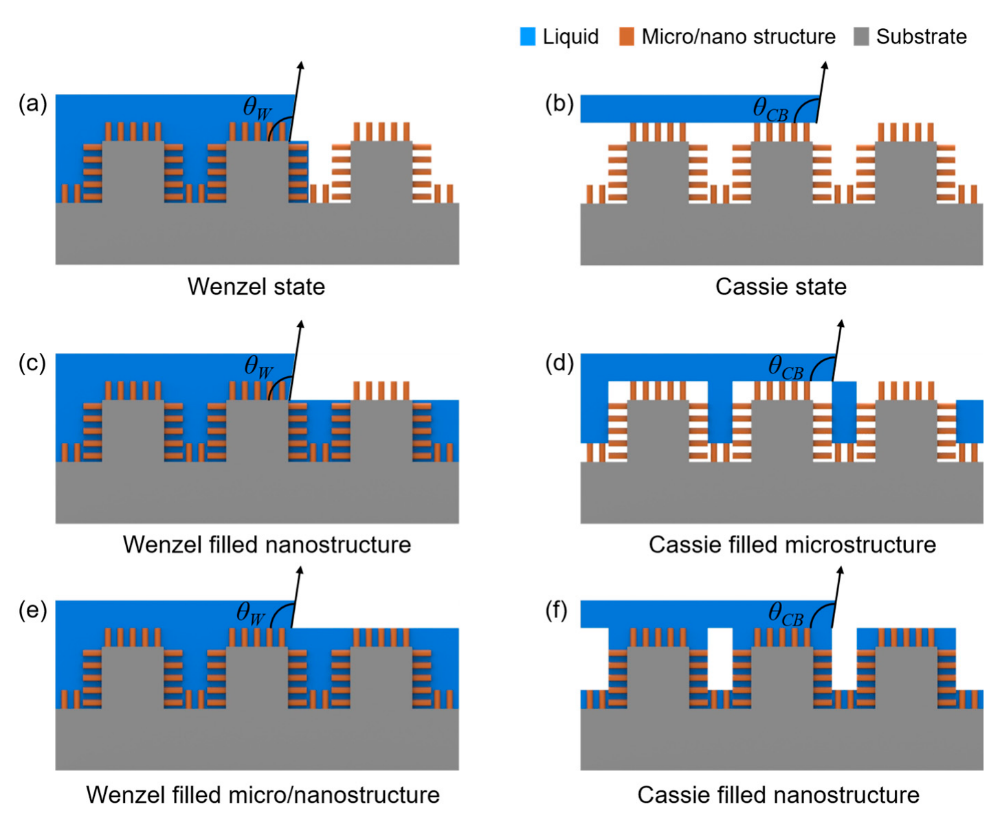

연구 배경과 분류
비생물학적 액체 반발의 기반 리뷰다. 초양소성만으로 항오염·면역 반응 개선을 입증하지 않는다.
경계 분류: 탐색을 위해 가장 가까운 주제를 배정했습니다. 분류 근거와 교차 연관을 함께 읽어야 하며, 주 테마만으로 연구 범위를 한정할 수 없습니다. 기초 연구의 분류는 직접적인 바이오전자 응용을 입증하지 않습니다.
투명성과 발액성의 균형
투명한 발액 코팅은 표면을 거칠게 만드는 것만으로 설계하기 어렵습니다. 거칠기는 액체 아래 공기를 가두는 데 도움이 되지만 빛 산란에도 영향을 줍니다. 여기에 휘거나 늘어난 뒤에도 젖음 특성을 유지해야 한다는 요구가 더해집니다. 이 종설은 발액성·투명성·유연성을 함께 요구할 때 제조법 선택이 왜 복잡해지는지를 정리한 2018년의 검토입니다.
세 제조 경로의 비교
세 제조 경로는 같은 일을 다른 이름으로 부른 것이 아닙니다. 패턴 전사는 금형이나 복제 과정을 통해 표면 형상을 조절하고, 나노입자 조립은 여러 기판에 거친 층을 형성하는 접근입니다. Thiol–ene 반응은 표면의 화학적 기능을 바꾸며 친액·발액 영역을 나누는 사례로 이어집니다. 따라서 형상 제어, 적용할 기판, 필요한 표면 기능 중 무엇이 중요한지에 따라 비교의 중심이 달라집니다.

미세·나노 계층 구조에서 가능한 여섯 가지 젖음 상태를 비교한 리뷰 도식입니다.
Bichitra Sahoo, Kukro Yoon, Jungmok Seo and Taeyoon Lee (2018). “Chemical and Physical Pathways for Fabricating Flexible Superamphiphobic Surfaces with High Transparency”. Figure 2. DOI: 10.3390/coatings8020047. CC BY 4.0. PDF를 300 dpi로 래스터화하여 그림 영역만 추출했습니다. 그림 내용은 변경하지 않았습니다.
젖음·광학·내구성의 평가축
정지한 액적의 접촉각만 크다고 잘 굴러가는 표면인 것은 아닙니다. 접촉각 이력과 미끄럼각은 액체가 표면에 얼마나 붙잡히는지를 함께 읽게 해 줍니다. 투과율도 측정 파장과 기판을 확인해야 하며, 내구성은 하중·반복수·마모 방식이 다른 시험을 구분해야 합니다. 이 지표들을 함께 보아야 한 특성의 개선이 다른 특성의 손실을 가린 경우를 줄일 수 있습니다.
형상 제어와 기판 적용성
저자들은 형상 변수를 조절하기 쉬운 전사법과 기판 선택의 폭이 넓은 나노입자 조립법의 장점을 구분합니다. 동시에 투명성과 유연성이 같은 조건에서 충분히 평가되지 않은 사례도 지적합니다. 이는 개별 연구의 제조법과 평가 범위를 묶어 읽은 종설의 결론이며, 모든 공정을 동일한 장치에서 시험해 하나의 최적법을 선정한 결과는 아닙니다.
표준화와 재료 선택의 과제
2018년 리뷰가 제시한 핵심 과제는 내구성을 보고하고 비교하는 방법의 부족입니다. 용도에 따라 기판 접착, 굽힘, 마모, 세탁처럼 필요한 시험도 달라집니다. 불소계 재료의 비용과 환경 부담 역시 재료 선택의 제약으로 논의합니다. 이러한 당시의 문제 제기를 현재 규제 판정이나 최신 상용화 수준으로 대신할 수는 없으며, 원저별 수치 순위도 이 종설만으로 만들지 않습니다.
관련 외부 연구
Designing superoleophobic surfaces
DOI: 10.1126/science.1148326 ↗
재진입 곡률·표면 화학·거칠기를 조합한 저표면장력 액체 반발은 초양소성 설계의 구체적 기초다.
PubMed 초록 확인. 투명성·유연성·마모 내구성의 동시 확보를 입증한 비교 자료로 보지 않는다.
초록 확인교신저자 확인
서정목 교신 확인아래는 서정목의 교신저자 여부에 관한 확인 기록입니다. 저자 순서나 별표만으로 판정하지 않으며, 본문 내용 검증과 별도로 읽어야 합니다.
- 교신 고지 확인 출처 ↗
Correspondence: [omitted] (J.S.); [omitted] (T.L.)
PDF p.1; author/correspondence information · publisher_PDF_publicly_hosted_by_author_institution
- 본문 확인 범위
- 기관이 공개한 출판사 PDF 1–26쪽의 서론, 젖음 모델·전이, 세 가지 제작 경로 절 전체, 응용, 권고, 결론과 그림 캡션을 읽었습니다. Table 1도 확인했습니다. 26–32쪽 개별 참고문헌과 원저 데이터는 독립적으로 검증하지 않았습니다.
- 보충자료 확인 범위
- 검토한 본문에서 별도의 SI를 확인하지 못했습니다. SI를 읽었다고 주장하지 않으며, 이 기록은 별도 SI가 존재하지 않는다는 뜻이 아닙니다.
- 남은 확인
- 개별 참고문헌과 원저 데이터를 독립 검증하지 않았습니다. 검토한 본문에서 별도 SI를 확인하지 못했으며 SI 열람이나 부재를 주장하지 않습니다. 원저 성능 순위·현재 규제·최신 상용화 수준은 이 종설로 판정하지 않습니다.
COVERAGE & OUTREACH
보도와 소개
논문과의 연관성을 확인한 소개 자료입니다. 언론 게재는 독립 취재나 실험 결과의 추가 검증을 뜻하지 않습니다.
이번 검색 범위에서 본문 대조를 마친 관련 소개 링크를 찾지 못했습니다. 관련 자료가 없다는 뜻은 아닙니다.
101편의 채널별 조사 범위와 검색 기록 →근거와 확인 범위
기관이 공개한 출판사 PDF 1–26쪽의 서론, 젖음 모델·전이, 세 가지 제작 경로 절 전체, 응용, 권고, 결론과 그림 캡션을 읽었습니다. Table 1도 확인했습니다. 26–32쪽 개별 참고문헌과 원저 데이터는 독립적으로 검증하지 않았습니다.
추가 해설은 아래에 명시한 근거 범위에서 편집 검토를 승인한 내용입니다. 모든 본문·보충자료의 검증 완료를 뜻하지 않습니다.
- 추가 본문 확인 범위
- 기관이 공개한 출판사 PDF 1–26쪽의 서론, 젖음 모델·전이, 세 가지 제작 경로 절 전체, 응용, 권고, 결론과 그림 캡션을 읽었습니다. Table 1도 확인했습니다. 26–32쪽 개별 참고문헌과 원저 데이터는 독립적으로 검증하지 않았습니다.
- 추가 보충자료 확인 범위
- 검토한 본문에서 별도의 SI를 확인하지 못했습니다. SI를 읽었다고 주장하지 않으며, 이 기록은 별도 SI가 존재하지 않는다는 뜻이 아닙니다.
- 원본 공개 논문 목록 ↗ · #42 · 2026-10-03
- Crossref metadata ↗: 이 Crossref 항목은 공개 서지 메타데이터 대조 기록입니다. 초록·본문·보충자료의 실제 열람 범위는 이 페이지의 별도 근거 기록에 명시하며, 서지 대조만으로 전문 열람이나 본문·보충자료 전체 검증 완료를 판정하지 않습니다. 정규화 후에도 제목이 달라 수동 검토가 필요합니다. 원본 제목을 자동 수정하지 않았습니다. 원본에 and its recent developments가 추가되어 있고 for the fabrication of와 for Fabricating도 다릅니다. 정식 제목과의 차이를 확인해야 합니다. license_urls는 등록된 링크 목록이며 본문·그림 재배포 허가를 의미하지 않습니다. TDM 또는 게시 정책 링크가 포함될 수 있습니다.
- Crossref record supplied by publisher ↗
publisher_registered_abstract_via_Crossref · message.abstract; read 2026-10-03; not direct publisher full text - Public access attempt ↗
access_attempt_failed · HTTP 429 Too Many Requests; checked 2026-10-03; no paper content inferred - Chemical and Physical Pathways for Fabricating Flexible Superamphiphobic Surfaces with High Transparency ↗
main_text · Introduction end; roughness/transparency challenge - Chemical and Physical Pathways for Fabricating Flexible Superamphiphobic Surfaces with High Transparency ↗
main_text · Section 2 opening, fabrication design tradeoff - Chemical and Physical Pathways for Fabricating Flexible Superamphiphobic Surfaces with High Transparency ↗
main_text · Section 2 route overview p.6; pattern-transfer examples p.6–17; nanoparticle assembly p.17–20; thiol–ene functionalization and wetting patterning p.21–23 - Chemical and Physical Pathways for Fabricating Flexible Superamphiphobic Surfaces with High Transparency ↗
review body; explanation of why static angle alone is insufficient is grounded in sections 1.1–1.2 · Section 1.1, contact-angle hysteresis - Chemical and Physical Pathways for Fabricating Flexible Superamphiphobic Surfaces with High Transparency ↗
main_text · Table 1: CA/CAH and transmission columns - Chemical and Physical Pathways for Fabricating Flexible Superamphiphobic Surfaces with High Transparency ↗
main_text · Wavelength-dependent transmission and wetting comparisons in section 2.1.4 - Chemical and Physical Pathways for Fabricating Flexible Superamphiphobic Surfaces with High Transparency ↗
review recommendations; comparison framing is editorial · Section 4: application-dependent durability tests - Chemical and Physical Pathways for Fabricating Flexible Superamphiphobic Surfaces with High Transparency ↗
main_text · Section 4 p.24–25: geometry control and substrate applicability; Section 5 p.25–26: gaps in flexibility/wear characterization - Chemical and Physical Pathways for Fabricating Flexible Superamphiphobic Surfaces with High Transparency ↗
review synthesis, not new experimental validation · Section 5 synthesis of the three fabrication routes - Chemical and Physical Pathways for Fabricating Flexible Superamphiphobic Surfaces with High Transparency ↗
main_text · Section 4: lack of unified reporting and durability procedures - Chemical and Physical Pathways for Fabricating Flexible Superamphiphobic Surfaces with High Transparency ↗
2018 review position; not a current regulatory determination · Section 4: fluorocarbon cost/environment discussion - Chemical and Physical Pathways for Fabricating Flexible Superamphiphobic Surfaces with High Transparency ↗
independent_reviewer_selected_main_text · PDF pp.3,5–6,13,22–26: wetting, fabrication, thiol–ene patterning, recommendations and conclusions. Underlying primary experiments not audited. - 추가 해설의 근거 ↗
연구 배경 · Introduction end; roughness/transparency challenge · main_text - 추가 해설의 근거 ↗
연구 배경 · Section 2 opening, fabrication design tradeoff · main_text - 추가 해설의 근거 ↗
핵심 접근과 발전 · Section 2 route overview p.6; pattern-transfer examples p.6–17; nanoparticle assembly p.17–20; thiol–ene functionalization and wetting patterning p.21–23 · main_text - 추가 해설의 근거 ↗
평가 방법과 조건 · Section 1.1, contact-angle hysteresis · review body; explanation of why static angle alone is insufficient is grounded in sections 1.1–1.2 - 추가 해설의 근거 ↗
평가 방법과 조건 · Table 1: CA/CAH and transmission columns · main_text - 추가 해설의 근거 ↗
평가 방법과 조건 · Wavelength-dependent transmission and wetting comparisons in section 2.1.4 · main_text - 추가 해설의 근거 ↗
평가 방법과 조건 · Section 4: application-dependent durability tests · review recommendations; comparison framing is editorial - 추가 해설의 근거 ↗
주요 결과 · Section 4 p.24–25: geometry control and substrate applicability; Section 5 p.25–26: gaps in flexibility/wear characterization · main_text - 추가 해설의 근거 ↗
주요 결과 · Section 5 synthesis of the three fabrication routes · review synthesis, not new experimental validation - 추가 해설의 근거 ↗
한계와 남은 질문 · Section 4: lack of unified reporting and durability procedures · main_text - 추가 해설의 근거 ↗
한계와 남은 질문 · Section 4: fluorocarbon cost/environment discussion · 2018 review position; not a current regulatory determination - 추가 해설의 근거 ↗
관련 연구와의 연결 · Existing verified PubMed abstract for Designing superoleophobic surfaces · abstract_only; no original full-text benchmark - 추가 해설의 근거 ↗
관련 연구와의 연결 · Re-entrant geometry and discussion of different fabrication-route capabilities · main_text